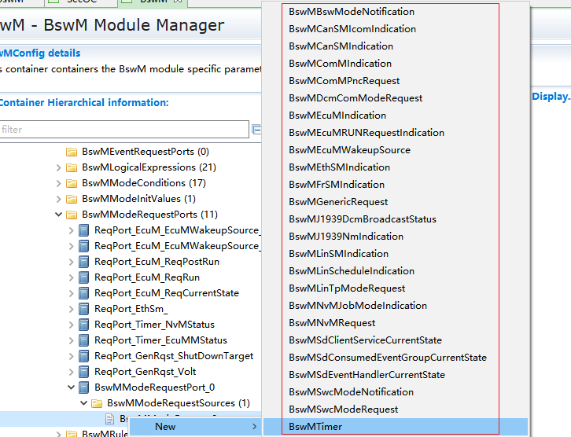
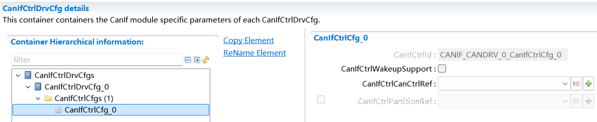
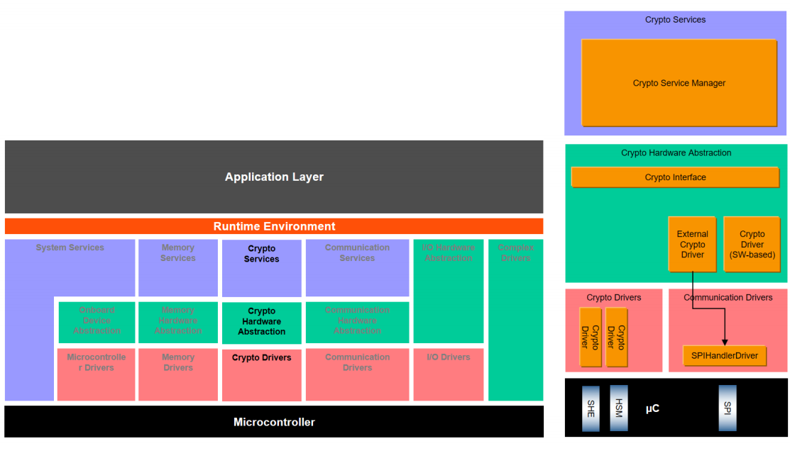

RH850U2A16_R7F702300BFABA_C_Demo¶
1.基本信息¶
1. Basic Information¶
1.1 简介¶
1.1 Brief Introduction¶
本Demo工程集成的AUTOSAR协议栈有CAN通信、诊断、网络管理、存储、看门狗、OS。各个模块均提供了参考的配置示例，旨在指导用户快速熟悉AUTOSAR中各个协议栈的模块的基本配置以及各个模块间的关联关系。
The AUTOSAR protocol stack integrated in this Demo project includes CAN communication, diagnosis, network management, storage, watchdog and OS. Each module provides reference configuration examples, with the purpose of guiding users to quickly familiarize themselves with basic configuration of modules of each protocol stack in AUTOSAR and the relationship between modules.
工程名 Project name |
工程类型 Project type |
|---|---|
Demo_RH850U2A16_V2510_BSW_ConfigProject |
BSW配置工程 BSW configuration project |
Demo_RH850_U2A16_V2510_GHS20220104_Project |
BSW集成工程 BSW integration project |
1.2 缩略词¶
1.2 Abbreviations¶
缩略语 Abbreviation |
中文解释 Interpretation in Chinese |
|---|---|
UDS |
统一的诊断服务 |
CAN |
控制器局域网络 |
NM |
网络管理 |
CanIf |
CAN接口模块 |
CanSm |
CAN状态管理模块 |
ComM |
通信管理模块 |
EcuM |
ECU状态管理模块 |
NvM |
非易失性存储管理 |
FEE |
Flash模拟Eep |
DCM |
诊断通信管理 |
DEM |
诊断事件管理 |
CANTP |
CAN传输层 |
ComM |
通信管理 |
WDG |
看门狗 |
WdgIf |
看门狗接口模块 |
WdgM |
看门狗管理模块 |
E2E |
(End-to-End)通信安全协议 |
OS |
操作系统 |
EthIf |
以太网接口模块 |
EthSM |
以太网状态管理模块 |
TcpIp |
TCP/IP协议簇 |
SoAd |
套接字适配模块 |
LdCom |
“大数据信号”通信模块 |
1.3 开发环境¶
1.3 Development Environment¶
工具描述 Tool description |
名称版本 Name version |
|---|---|
编译器&IDE Compiler & IDE |
GreenHills win64_v800_202214 |
DaVinci工具 DaVinci tool |
DaVinciConfigurator |
MCAL |
AUTOSAR_RH850_U2Ax_MCAL_Ver43.03.00_QM_MP |
硬件开发板 Hardware development board |
RH850U2A_292 V2.4_20240422 WP_RH850U2A16292OTPE_V2.0 |
调试器 Debugger |
Renesas E2 |
1.3.1 开发环境获取¶
1.3.1 Development Environment Acquisition¶
上述开发环境需用户自行获取。
The above development environment needs to be obtained by users themselves.
2.BSW工程目录结构说明¶
2. BSW Project Directory Structure Description¶
AUTOSAR 基础软件集成工程的目录结构如下：
The directory structure of AUTOSAR basic software integration project is as follows:

各文件夹释义：
Interpretation of each folder:
ASW：存放应用代码，供客户添加应用代码。
ASW: Stores application codes for customers to add application codes.
{kind=link}
BSW：存放BSW相关代码，包括AUTOSAR各个协议栈源代码和配置、MCAL的源代码和配置、复杂驱动的源代码和配置等。
BSW: Stores BSW related codes, including source codes and configuration of each AUTOSAR protocol stack, MCAL source codes and configuration, source codes and configuration of complex drivers, etc.

CommonInclude：存放共用的头文件，比如Std_Types.h、Compiler.h、ComStack_Types.h等。
CommonInclude: Stores shared header files such as Std_Types.h, Compiler.h, ComStack_Types.h, etc.

Config：存放BSW配置相关的代码，包含BSW的配置、MCAL的配置、CDD的配置等。
Config: Stores codes related to BSW configuration, including BSW configuration, MCAL configuration, CDD configuration, etc.

MCAL：存放MCAL各模块的源代码、CanTrcv、LinTrcv、EthPhy、CDD模块源代码。
MCAL: Stores the source codes of each module of MCAL, and source codes of CanTrcv, LinTrcv, EthPhy, and CDD modules.

LinkFile：存放链接文件。
LinkFile: Store link files.
{kind=link}
Main：存放主函数入口文件。
Main: Stores main function entry files.

3. 协议栈配置说明¶
3. Protocol Stack Configuration Description¶
3.1 CAN通信协议栈¶
3.1 CAN Communication Protocol Stack¶
3.1.1 CAN通信协议栈概述¶
3.1.1 Overview of CAN Communication Protocol Stack¶
CAN通信协议栈涉及到的软件模块主要有CAN、CanIf、PduR、Com、EcuC模块，其中各个模块的主要功能如下表：
The software modules involved in CAN communication protocol stack mainly include CAN, CanIf, PduR, Com, and EcuC modules, and the main functions of each module are shown in the table below:
CAN通信栈各配置模块介绍
Introduction to Each Configuration Module of CAN Communication Stack
模 块名 Module name |
功能 Function |
|---|---|
Can |
主要配置CAN控制器的波特率，CAN报文的收发邮箱。 Mainly configure the baud rate of CAN controller, and the email for sending and receiving CAN messages. |
CanIf |
CanIf 模块主要处理上层模块与底层驱动的之间P DU的传递，为上层模块提供统一的接口来管理不同的CAN硬件模块。 The CanIf module mainly handles the transmission of PDU between upper-level modules and underlying drivers, providing a unified interface for upper-level modules to manage different CAN hardware modules. |
EcuC |
用于辅助 配置工具完成配置的模块。主要提供Pdu的定义，其它模块通过关联 EcuC中Pdu，相互关联起来。 A module used to assist configuration tools in completing configuration. Mainly provide the definition of Pdu, and other modules are interrelated by associating Pdu in EcuC. |
PduR |
PDU Router主要为通讯接口模块（CANIF）、传输协议模块（CAN TP、J1939 TP）、诊断 通讯管理模块（DCM、J1939DCM）以及通讯模块（COM、LDCOM）以及 IPDUM、SECOC等模块提供基于 I-PDU的路由服务。 PDU Router mainly provides I-PDU-based routing services for communication interface modules (CANIF), transmission protocol modules (CAN TP, J1939 TP), diagnostic communication management modules (DCM, J1939DCM), communication modules (COM, LDCOM), IPDUM, and SECOC modules. |
Com |
COM模块主要提供 I-PDU和信号相关管理功能 The COM module mainly provides I-PDU and signal related management functions |
3.1.2 CAN通信协议栈配置功能说明¶
3.1.2 Description of CAN Communication Protocol Stack Configuration Functions¶
CAN通信协议栈配置的发送报文说明：
Description of sending messages of CAN communication protocol stack configuration:
报文名 Message name |
CANID |
说明 Description |
|---|---|---|
CAN0_Tx_0x300_Cyclic |
0x300 |
周期报文，周期时间：500ms Cyclic message, cycle time: 500ms 该报文下的信号均配有UB位 The signals under this message are all provided with UB bit |
CAN0_Tx_0x301_Event |
0x301 |
事件报文 Event message |
CAN0_Tx_0x302_Mixed |
0x302 |
混合 报文，正常周期：500ms，触 发后连发3帧，周期为：50ms Mixed message, normal cycle: 500ms, triggered to send 3 consecutive frames, cycle: 50ms |
CAN0_Tx_0x303_Cyclic_Counter |
0x303 |
周期报文，周期时间 ：500ms，带RollingCounter Cyclic message, cycle time: 500ms, with RollingCounter |
CAN0_Tx_0x350_Cyclic_PN17 |
0x350 |
周期报文，周期时间：100ms Cyclic message, cycle time: 100ms 受PN17控制 Controlled by PN17 |
CAN0_Tx_0x351_Cyclic_PN29 |
0x351 |
周期报文，周期时间：100ms Cyclic message, cycle time: 100ms 受PN29控制 Controlled by PN29 |
CAN0_Tx_0x360_E2E_P01 |
0x360 |
周期报文，周期时间：100ms Cyclic message, cycle time: 100ms E2E报文，DATAID：0x1234 E2E message, DATAID: 0x1234 |
CAN通信协议栈配置的接收报文说明：
Description of receiving messages of CAN communication protocol stack configuration:
报文名 Message name |
CANID |
说明 Description |
|---|---|---|
CAN0_Rx_0x200_Cyclic |
0x200 |
周期报文，周期时间：500ms Cyclic message, cycle time: 500ms 该报文下的信号均配有UB位 The signals under this message are all provided with UB bit |
CAN0_Rx_0x201_Event |
0x201 |
事件报文 Event message |
CAN0_Rx_0x202_Mixed |
0x202 |
混合报文，正常周期：5 00ms，触发后连发3帧，周期为 ：50ms，包含信号超时2500ms Mixed message, normal cycle: 500ms, triggered to send 3 consecutive frames, cycle: 50ms, including 2500ms of signal timeout |
CAN0_Rx_0x203_Cyclic_Counter |
0x203 |
周期报文，周期时 间：500ms，带RollingCounter Cyclic message, cycle time: 500ms, with RollingCounter |
CAN0_Rx_0x250_Cyclic_PN17 |
0x250 |
周期报文，周期时间：100ms Cyclic message, cycle time: 100ms 受PN17控制 Controlled by PN17 |
CAN0_Rx_0x251_Cyclic_PN29 |
0x251 |
周期报文，周期时间：100ms Cyclic message, cycle time: 100ms 受PN29控制 Controlled by PN29 |
CAN0_Rx_0x260_E2E_P01 |
0x260 |
周期报文，周期时间：100ms Cyclic message, cycle time: 100ms E2E报文，DATAID：0x1234 E2E message, DATAID: 0x1234 |
3.2 CAN网络管理协议栈¶
3.2 CAN Network Management Protocol Stack¶
3.2.1 CAN网络管理协议栈概述¶
3.2.1 Overview of CAN Network Management Protocol Stack¶
CAN通信协议栈涉及到的软件模块主要有Can、CanIf、CanSM、EcuC、NM、CanNm、ComM模块，其中各个模块的主要功能如下表：
The software modules involved in CAN communication protocol stack mainly include Can, CanIf, CanSM, EcuC, NM, CanNm, and ComM modules, and the main functions of each module are shown in the table below:
网络管理栈各配置模块介绍
Introduction to Each Configuration Module of Network Management Stack
模块名 Module name |
功能 Function |
|---|---|
Can |
主要配置CAN控制器的波特率，CAN报文的收发邮箱。 Mainly configure the baud rate of CAN controller, and the email for sending and receiving CAN messages. |
CanIf |
CanIf模块主要处理上层模块与底层驱动的之间 PDU的传递，为上层模块提供统一的接口来管理不同的CAN 硬件模块。 The CanIf module mainly handles the transmission of PDU between upper-level modules and underlying drivers, providing a unified interface for upper-level modules to manage different CAN hardware modules. |
EcuC |
用于辅助配置工具完 成配置的模块。主要提供Pdu的定义，其它模块通过关联 EcuC中Pdu，相互关联起来。 A module used to assist configuration tools in completing configuration. Mainly provide the definition of Pdu, and other modules are interrelated by associating Pdu in EcuC. |
Nm |
NmIf模块主要包含两个功能：N mIf模块是ComM与CanNm之间的适配层；网络管理协调功能 ，协调不同总线channel的ECU节点实现网络的同步睡眠。 The NmIf module mainly includes two functions: the NmIf module is an adaptation layer between ComM and CanNm; the network management coordination function coordinates ECU nodes of different bus channels to achieve synchronous sleep of the network. |
ComM |
ComM模块封装了控制底 层的通信服务。通信管理模块从通信请求者那里收集总线 通信访问请求，并协调这些请求，主要目的是：为每个Ch annel设置一个状态机控制一个ECU的多个通信总线通道。 The ComM module encapsulates the communication services that control the underlying layer. The communication management module collects bus communication access requests from communication requesters and coordinates these requests, with the main purpose of setting a state machine for each channel to control multiple communication bus channels of an ECU. |
CanSM |
主要功能是与通信硬件抽 象层和系统服务层产生交互，为每一个CAN通信总线定义 一个总线相关的状态管理，并为相关的总线提供流控制。 The main function is to interact with the communication hardware abstraction layer and the system service layer, define a bus-related state management for each CAN communication bus, and provide flow control for relevant buses. |
CanNM |
负责实现ECU的状态 切换。比如合适进入睡眠、是否保持正常的网络状态等。 Switch ECU state. For example, whether it is appropriate to enter sleep and whether normal network status is maintained. |
3.2.2 CAN网络管理协议栈配置说明¶
3.2.2 Description of CAN Network Management Protocol Stack Configuration¶
CAN网络管理的接收报文ID范围为0x500-0x5ff,
The ID range for receiving messages of CAN network management is 0x500-0x5ff,
CAN网络管理的发送报文ID为0x501
The ID for sending messages of CAN network management is 0x501
CanNM的主要配置参数如下表所示：
The main configuration parameters of CanNM are shown in the following table:
配置项 Configuration item |
配置参数 Configuration parameter |
|---|---|
CanNmGlobalPnSupport |
TRUE |
CanNmComUserDataSupport |
TRUE |
CanNmMainFunctionPeriod |
0.005 |
CanNmPassiveModeEnabled |
FALSE |
CanNmPnEiraCalcEnabled |
TRUE |
CanNmPnResetTime |
2.5S |
CanNmActiveWakeupBitEnabled |
TRUE |
CanNmAllNmMessagesKeepAwake |
TRUE |
CanNmCarWakeUpRxEnabled |
FALSE |
CanNmImmediateNmCycleTime |
0.02S |
CanNmImmediateNmTransmissions |
10 |
CanNmMsgCycleOffset |
0.0 |
CanNmMsgCycleTime |
1.0S |
CanNmMsgTimeoutTime |
0.001S |
CanNmNodeId |
1 |
CanNmPduCbvPosition |
CANNM_PDU_BYTE_1 |
CanNmPduNidPosition |
CANNM_PDU_BYTE_0 |
CanNmPnEnabled |
TRUE |
Ca nNmPnHandleMultipleNetworkRequests |
FALSE |
CanNmRepeatMessageTime |
3S |
CanNmRetryFirstMessageRequest |
TRUE |
CanNmTimeoutTime |
3.0S |
CanNmWaitBusSleepTime |
1.5S |
CanSMBorCounterL1ToL2 |
10 |
CanSMBorTimeL1 |
0.1S |
CanSMBorTimeL2 |
1.0S |
CanSMBorTimeTxEnsured |
FALSE |
CanSMEnableBusOffDelay |
FALSE |
3.2.3 CAN网络管理协议栈休眠唤醒说明¶
3.2.3 Description of CAN Network Management Protocol Stack Sleep/Wake-up¶
设置唤醒源主要包含两个为远程唤醒和本地唤醒
Setting the wake-up source mainly includes remote wake-up and local wake-up
唤醒源 Wake-up source |
说明 Description |
|---|---|
EcuMWakeupSource_CAN |
被动唤 醒，需要检测总线上是否为网管报文 Passive wake-up, which requires checking whether there is a network management message on the bus |
EcuMWakeupSource_Local |
主动 唤醒，用户请求后就会立即请求网络 Active wake-up, in which the network will be immediately requested upon the user’s request |
在开发板上，ECU一上电主动请求网络，释放网络后ECU休眠时直接调用Mcu_PerformReset进行复位。
On the development board, once the ECU is powered on, it will actively request the network. After the network is released, when the ECU enters sleep mode, Mcu_PerformReset will be called directly to reset.
3.3 CAN诊断协议栈¶
3.3 CAN Diagnostic Protocol Stack¶
3.3.1 CAN诊断协议栈概述¶
3.3.1 Overview of CAN Diagnostic Protocol Stack¶
CAN诊断协议栈涉及到的软件模块主要有Can、CanIf、CanTP、EcuC、DCM、DEM模块，其中各个模块的主要功能如下表：
The software modules involved in CAN diagnostic protocol stack mainly include Can, CanIf, CanTP, EcuC, DCM and DEM modules, and the main functions of each module are shown in the table below:
诊断栈各配置模块介绍
Introduction to Each Configuration Module of Diagnostic Stack
模块名 Module name |
功能 Function |
|---|---|
Can |
主要配置CAN控制器的波特率，CAN报文的收发邮箱。 Mainly configure the baud rate of CAN controller, and the email for sending and receiving CAN messages. |
CanIf |
CanIf模块主 要处理上层模块与底层驱动的之间PDU的传递，为上 层模块提供统一的接口来管理不同的CAN硬件模块。 The CanIf module mainly handles the transmission of PDU between upper-level modules and underlying drivers, providing a unified interface for upper-level modules to manage different CAN hardware modules. |
EcuC |
用 于辅助配置工具完成配置的模块。主要提供Pdu的定 义，其它模块通过关联EcuC中Pdu，相互关联起来。 A module used to assist configuration tools in completing configuration. Mainly provide the definition of Pdu, and other modules are interrelated by associating Pdu in EcuC. |
PduR |
PDU Router 主要为通讯接口模块（CANIF）、传输协议模块（CAN TP、J1939 TP）、诊断通讯管理模块 （DCM、J1939DCM）以及通讯模块（COM、LDCOM）以 及IPDUM、SECOC等模块提供基于I-PDU的路由服务。 PDU Router mainly provides I-PDU-based routing services for communication interface modules (CANIF), transmission protocol modules (CAN TP, J1939 TP), diagnostic communication management modules (DCM, J1939DCM), communication modules (COM, LDCOM), IPDUM, and SECOC modules. |
CanTp |
CANTP模块实现依据ISO15765-2 标准规范中 定义的CAN总线数据在传输层的数据接收发送功能。 The CANTP module implements the data receiving and transmission functions of CAN bus data defined in the ISO15765-2 standards at the transport layer. |
Dcm |
依据ISO15765-3和ISO14229-1标准描述，实现诊 断请求报文的解析，响应(正响应和负响应)与执行。 According to the description in ISO 15765-3 and ISO 14229-1 standards, implement parsing, response (positive and negative responses), and execution of diagnostic request messages. |
Dem |
实现诊断故障的存储与管理功能，提供API接口供 其他模块读取DTC和对应的冻结帧数据和扩展数据。 Implement functions of diagnosis fault storage and management, and provide API interfaces for other modules to read DTC and corresponding freeze frame data and extended data. |
3.3.2 CAN诊断协议栈配置说明¶
3.3.2 Description of CAN Diagnostic Protocol Stack Configuration¶
CAN诊断协议栈的CANID如下表：
The CANID of the CAN diagnostic protocol stack is shown in the following table:
CANID类型 CANID type |
CANID |
|---|---|
物理寻址 Physical Request CAN ID |
0x708 |
功能寻址 Functional Request CAN ID |
0x7DF |
物理响应 Physical Response CAN ID |
0x709 |
Demo工程中配置的诊断服务有如下表所示：
The diagnostic services configured in the Demo project are shown in the following table:

CAN诊断时间参数如下:
The CAN diagnostic time parameters are as follows:
符号 Symbol |
最小值 Min |
最大值/超时时间 Max/Timeout |
单位 Unit |
|---|---|---|---|
P2Server |
N/A |
50 |
ms |
P2*Server |
N/A |
5000 |
ms |
S3Server |
N/A |
5000 |
ms |
符号 Symbol |
超时时间 Timeout |
性能要求 Performance Requirement |
单位 Unit |
|---|---|---|---|
N_As/N_Ar |
70 |
—— |
ms |
N_Bs |
150 |
—— |
ms |
N_Br |
—— |
< 70 |
ms |
N_Cs |
—— |
< 150 |
ms |
N_Cr |
150 |
—— |
ms |
符号 Symbol |
参数 Parameter |
值 Value |
单位 Unit |
|---|---|---|---|
BS |
Block Size |
0 |
—— |
STmin |
Minimum Separation Time |
10 |
ms |
Fill bytes(发送数据填充) Fill bytes (transmitting data fill) |
Padding |
0xAA |
—— |
接收填充值检查 Receiving fill value check |
ON/OFF |
OFF |
—— |
Fill bytes(接收数据填充) Fill bytes (receiving data fill) |
Padding |
—— |
—— |
诊断报文长度 Diagnostic message length |
Byte Size |
8 |
—— |
诊断报文长度检查 Diagnostic message length check |
ON/OFF |
ON |
—— |
DCM接收BUFFER最大值 Maximum BUFFER received by DCM |
Byte Size |
1024 |
—— |
DCM发送BUFFER最大值 Maximum BUFFER sent by DCM |
Byte Size |
1024 |
—— |
安全访问算法配置信息如下：
The security access algorithm configuration information is as follows:
Mask = 0x5555AAAAu |
密钥算法（根据Seed计算Key）如下，其中seed为输入的种子。
The key algorithm (calculate the Key based on Seed) is as follows, where Seed is the input seed.
Key = Seed & Mask |
注：最大失败次数为3，达到最大失败次数启动延时时间为10S；连续请求种子错误计数不加1，延时时间过后错误计数清零。
Note: The maximum number of failures is 3, and the startup delay time when the maximum number of failures is reached is 10 seconds; the error count for consecutive seed requests does not increase by 1, and the error count is reset to zero after the delay time.
DID列表：
DID List:

IO DID列表：
IO DID List:
{kind=link}
RID列表：

DTC列表：

RID List:
DTC List:
注：DTC格式：01，ISO 14229；DTC status支持的bit位仅bit7不支持，0x7F；
Note: DTC format: 01, ISO 14229; AMONG The bit supported by DTC status, only bit7 is not supported, 0x7F;
DTC扩展数据：
DTC extended data:
{kind=link}
DTC快照：
DTC snapshot:

3.4 存储协议栈¶
3.4 Storage Protocol Stack¶
3.4.1 存储协议栈概述¶
3.4.1 Overview of Storage Protocol Stack¶
存储协议栈涉及到的软件模块主要有Flash、FEE、NvM模块，其中各个模块的主要功能如下表：
The software modules involved in the storage protocol stack mainly include Flash, FEE, and NvM modules, and the main functions of each module are shown in the table below:
NvM 各配置模块介绍
Introduction to Each Configuration Module of NvM
模 块名 Module name |
功能 Function |
|---|---|
Flash |
提供对Flash的读，写，擦相关操作服务。 Provide read, write, and erase related operation services for Flash. |
FEE |
为上层提供虚拟线性地址空间和统一的存储分配方案。 Provide virtual linear address space and unified storage allocation scheme for the upper layer. |
NvM |
非易失性数据的存储和管理。 Storage and management of non-volatile data. |
3.4.2 存储协议栈配置说明¶
3.4.2 Description of Storage Protocol Stack Configuration¶
存储协议栈中主要配置了如下NvMBlock:
The storage protocol stack is mainly configured with the following NvMBlock:
NvMBlock名 NvMBlock name |
作用 Function |
|---|---|
NvMBlock_ConfigID |
NvM管理 NvM management |
NvMBlock_SecurityLevel01 |
用来 存放安全等级1错误计数（暂未使用） Store error counts of security level 1 (not used yet) |
NvMBlock_SecurityLevel02 |
用来 存放安全等级2错误计数（暂未使用） Store error counts of security level 2 (not used yet) |
NvMBlock_Did_0xF190 |
用来存放DID 0xF190的数据 Store DID 0xF190 data |
NvMBlock_Did_0xF183 |
用来存放DID 0xF183的数据 Store DID 0xF183 data |
NvMBlock_Primary_0 |
用来存放Dem的数据（以下 NvMBlock均是Dem自动同步生成配置） Store Dem data (the NvMBlocks below are all automatically and synchronously and generated configuration of Dem) |
NvMBlock_Primary_1 |
用来存放Dem的数据 Store Dem data |
NvMBlock_Primary_2 |
用来存放Dem的数据 Store Dem data |
NvMBlock_Primary_3 |
用来存放Dem的数据 Store Dem data |
NvMBlock_Primary_4 |
用来存放Dem的数据 Store Dem data |
NvMBlock_Primary_5 |
用来存放Dem的数据 Store Dem data |
NvMBlock_Primary_6 |
用来存放Dem的数据 Store Dem data |
NvMBlock_Primary_7 |
用来存放Dem的数据 Store Dem data |
NvMBlock_Primary_8 |
用来存放Dem的数据 Store Dem data |
NvMBlock_Primary_9 |
用来存放Dem的数据 Store Dem data |
NvMBlock_Primary_10 |
用来存放Dem的数据 Store Dem data |
NvMBlock_Primary_11 |
用来存放Dem的数据 Store Dem data |
NvMBlock_Primary_12 |
用来存放Dem的数据 Store Dem data |
NvMBlock_Primary_13 |
用来存放Dem的数据 Store Dem data |
NvMBlock_Primary_14 |
用来存放Dem的数据 Store Dem data |
NvMBlock_Primary_15 |
用来存放Dem的数据 Store Dem data |
NvMBlock_Primary_16 |
用来存放Dem的数据 Store Dem data |
NvMBlock_AdminData |
用来存放Dem的数据 Store Dem data |
NvMBlock_EventStatusData |
用来存放Dem的数据 Store Dem data |
3.5 看门狗协议栈¶
3.5 Watchdog Protocol Stack¶
3.5.1 看门狗协议栈概述¶
3.5.1 Overview of Watchdog Protocol Stack¶
看门狗协议栈是一种用于监控和保护系统运行状态的机制。它通过监控软件执行的稳定性和正确性确保了在系统发生故障时能迅速采取恢复措施。
The watchdog protocol stack is a mechanism used to monitor and protect the operational status of the system. It ensures recovery measures can be taken rapidly in the event of system failure by monitoring the stability and correctness of software execution.
Wdg协议栈主要涉及到的模块为Wdg、WdgIf 、WdgM ，其中各个模块的主要功能如下表：
The main modules involved in the Wdg protocol stack are Wdg, WdgIf, and WdgM. The main functions of each module are shown in the table below:
Wdg 看门狗协议栈各配置模块介绍
Introduction to Each Configuration Module of Wdg Watchdog Protocol Stack
模块名 Moudule name |
功能 Function |
|---|---|
Wdg |
Wdg 属于 MCAL的一部分，用于完成看门狗初始化，模式设置以及喂狗设置等。 Wdg is part of MCAL, and is used to complete watchdog initialization, mode settings, and feed dog settings. |
WdgIf |
WdgIf 模块属于ECU抽象层，能够允许上层WdgM 模块来同时处理多个看门狗实体，比如外部看门狗或者内部看门狗。 The WdgIf module belongs to the ECU abstraction layer, and allows the upper-level WdgM module to simultaneously handle multiple watchdog entities, such as external watchdog or internal watchdog. |
WdgM |
WdgM 模块 从硬件看门狗实体监控的过程抽象出来完成软件程序执行监控抽象。 The WdgM module abstracts the process of hardware watchdog entity monitoring to complete the abstraction of software program execution monitoring. |
3.5.2 看门狗协议栈配置说明¶
3.5.2 Description of Watchdog Protocol Stack Configuration¶
看门狗协议栈中配置了一个Alive supervision用于监控定期软件的时间。
An Alive supervision is configured in the watchdog protocol stack to monitor the timing of periodic software.
监控类型 Monitoring type |
描述 Description |
监控实体个数 Number of monitored entities |
监控点个数 Number of monitored points |
参考周期 Reference period |
监控失败门限 Monitoring failure threshold |
监控失效门限 Monitoring deactivation threshold |
期望执行次数 Expected number of executions |
次数上偏差 Upper deviation in the number of times |
次数下偏差 Lower deviation in the number of times |
|---|---|---|---|---|---|---|---|---|---|
Alive 监控 Alive monitoring |
监控一次mainfunction周期alive监控点执行的次数 Monitor the number of times of alive monitoring point execution during a main function cycle |
1 |
1 |
1 |
0 |
0 |
1 |
0 |
0 |
3.6 OS协议栈¶
3.6 OS Protocol Stack¶
3.6.1 OS协议栈概述¶
3.6.1 Overview of OS Protocol Stack¶
AUTOSAR OS主要负责任务管理和中断管理功能；实现包括以下模块:Task、Isr、Countor、Alarm、ScheduleTable、Event、Resource等。
AUTOSAR OS is mainly responsible for implementing task management and interrupt management functions; the implementation includes the modules of Task, Isr, Countor, Alarm, ScheduleTable, Event, Resource and so on.
3.6.2 OS协议栈配置说明¶
3.6.2 Description of OS Protocol Stack Configuration¶
Name |
Priority |
Stack Size[4Bytes]Stack Size[4Bytes] |
Preemptive PolicyPreemptive Policy |
OsTaskAutostart |
Core |
|---|---|---|---|---|---|
OsTask_1000ms_c1 |
1 |
512 |
FULL |
False |
1 |
iSoft_Auto_EcuPartition_0_OsTask_10ms_BSW |
25 |
1024 |
FULL |
False |
0 |
iSoft_Auto_EcuPartition_1_OsTask_10ms_BSW |
25 |
1024 |
FULL |
False |
1 |
iSoft_Auto_EcuPartition_0_OsTask_5ms_BSW |
25 |
1024 |
FULL |
False |
0 |
iSoft_Auto_EcuPartition_2_OsTask_10ms_BSW |
25 |
256 |
FULL |
False |
2 |
iSoft_Auto_EcuPartition_3_OsTask_10ms_BSW |
25 |
256 |
FULL |
False |
3 |
iSoft_Auto_EcuPartition_1_OsTask_5ms_BSW |
25 |
1024 |
FULL |
False |
1 |
iSoft_Auto_EcuPartition_0_OsTask_1ms_BSW |
25 |
256 |
FULL |
False |
0 |
iSoft_Auto_EcuPartition_1_OsTask_1ms_BSW |
25 |
256 |
FULL |
False |
1 |
iSoft_Auto_EcuPartition_1_OsTask_SchM_0 |
63 |
256 |
FULL |
False |
1 |
iSoft_Auto_EcuPartition_3_OsTask_SchM_0 |
63 |
256 |
FULL |
False |
3 |
iSoft_Auto_EcuPartition_0_OsTask_SchM_0 |
63 |
256 |
FULL |
False |
0 |
iSoft_Auto_EcuPartition_2_OsTask_SchM_0 |
63 |
256 |
FULL |
False |
2 |
iSoft_Auto_EcuPartition_0_OsTask_Init |
64 |
1024 |
NON |
True |
0 |
iSoft_Auto_EcuPartition_1_OsTask_Init |
64 |
1024 |
NON |
True |
1 |
iSoft_Auto_EcuPartition_2_OsTask_Init |
64 |
1024 |
NON |
True |
2 |
iSoft_Auto_EcuPartition_3_OsTask_Init |
64 |
1024 |
NON |
True |
3 |
Name |
Category |
Stack Size[4Bytes]Stack Size[4Bytes] |
Priority |
Nested Enable |
Core |
|---|---|---|---|---|---|
RCANGERR0 |
GATEGORY_2 |
512 |
1 |
False |
0 |
RCANGRECC0 |
GATEGORY_2 |
512 |
1 |
False |
0 |
RCAN2ERR |
GATEGORY_2 |
512 |
1 |
False |
0 |
RCAN2REC |
GATEGORY_2 |
512 |
1 |
False |
0 |
RCAN2TRX |
GATEGORY_2 |
512 |
1 |
False |
0 |
WDTB0TIT |
GATEGORY_2 |
512 |
1 |
False |
0 |
ETNB0DATA |
GATEGORY_2 |
512 |
1 |
False |
1 |
ETNB0ERR |
GATEGORY_2 |
512 |
1 |
False |
1 |
ETNB0MNG |
GATEGORY_2 |
512 |
1 |
False |
1 |
ETNB0MAC |
GATEGORY_2 |
512 |
1 |
False |
1 |
Name |
Set Event |
Set Event Task |
Core |
Activate Task |
OsAlarmAutostart |
Start Time |
Cycle Time |
|---|---|---|---|---|---|---|---|
iSoft_Auto_EcucPartition_0_OsAlarm_10ms_BSW |
iSoft_Auto_EcucPartition_0_OsEvent_10ms_BSW |
iSoft_Auto_EcucPartition_0_OsTask_10ms_BSW |
0 |
—— |
—— |
—— |
—— |
iSoft_Auto_EcucPartition_1_OsAlarm_10ms_BSW |
iSoft_Auto_EcucPartition_1_OsEvent_10ms_BSW |
iSoft_Auto_EcucPartition_1_OsTask_10ms_BSW |
1 |
—— |
—— |
—— |
—— |
iSoft_Auto_EcucPartition_0_OsAlarm_5ms_BSW |
iSoft_Auto_EcucPartition_0_OsEvent_5ms_BSW |
iSoft_Auto_EcucPartition_0_OsTask_5ms_BSW |
0 |
—— |
—— |
—— |
—— |
iSoft_Auto_EcucPartition_2_OsAlarm_10ms_BSW |
iSoft_Auto_EcucPartition_2_OsEvent_10ms_BSW |
iSoft_Auto_EcucPartition_2_OsTask_10ms_BSW |
2 |
—— |
—— |
—— |
—— |
iSoft_Auto_EcucPartition_3_OsAlarm_10ms_BSW |
iSoft_Auto_EcucPartition_3_OsEvent_10ms_BSW |
iSoft_Auto_EcucPartition_3_OsTask_10ms_BSW |
3 |
—— |
—— |
—— |
—— |
iSoft_Auto_EcucPartition_1_OsAlarm_5ms_BSW |
iSoft_Auto_EcucPartition_1_OsEvent_5ms_BSW |
iSoft_Auto_EcucPartition_1_OsTask_5ms_BSW |
1 |
—— |
—— |
—— |
—— |
iSoft_Auto_EcucPartition_0_OsAlarm_1ms_BSW |
iSoft_Auto_EcucPartition_0_OsEvent_1ms_BSW |
iSoft_Auto_EcucPartition_0_OsTask_1ms_BSW |
0 |
—— |
—— |
—— |
—— |
iSoft_Auto_EcucPartition_1_OsAlarm_1ms_BSW |
iSoft_Auto_EcucPartition_1_OsEvent_1ms_BSW |
iSoft_Auto_EcucPartition_1_OsTask_1ms_BSW |
1 |
—— |
—— |
—— |
—— |
OsAlarm_1000ms_c1 |
—— |
—— |
—— |
OsTask_1000ms_c1 |
True |
0 |
1000 |
OsAlarm_100ms_c2 |
—— |
—— |
—— |
OsTask_100ms_c2 |
True |
100 |
100 |
3.7 以太网协议栈¶
3.7 Ethernet Protocol Stack¶
3.7.1 以太网协议栈概述¶
3.7.1 Overview of Ethernet Protocol Stack¶
以太网协议栈涉及到的软件模块主要有EthIf、EthSM、TcpIp、SoAd、PduR、LdCom、EcuC模块，其中各个模块的主要功能如下表：
The software modules involved in the Ethernet protocol stack mainly include EthIf, EthSM, TcpIp, SoAd, PduR, LdCom and EcuC modules. The main functions of each module are shown in the table below:
模块名 Module name |
功能 Function |
|---|---|
EthIf |
EthIf 模块主要处理上层模块与底层驱动之间 PDU 的传递，为上层模块提供统一的接口来管理不同的以太网硬件模块。 The EthIf module mainly handles the transmission of PDU between upper-level modules and underlying drivers, providing a unified interface for upper-level modules to manage different Ethernet hardware modules. |
EthSM |
主要功能是与通信硬件抽象层和系统服务层产生交互，为每一个以太网通信总线定义一个总线相关的状态管理，并为相关的总线提供流控制。 The main function is to interact with the communication hardware abstraction layer and the system service layer, define a bus-related state management for each Ethernet communication bus, and provide flow control for relevant buses. |
TcpIp |
TcpIp 模块是基础软件中负责实现 TCP/IP 协议簇功能的核心组件，主要为汽车电子控制单元（ECU）提供符合行业标准的网络通信能力。 The TcpIp module is the core component responsible for implementing TCP/IP protocol suite functions in basic software, mainly providing industry standard network communication capability for automotive electronic control unit (ECU). |
SoAd |
主要用于管理和适配套接字通信。 Mainly used for managing and adapting to socket communication. |
EcuC |
用于辅助配置工具完成配置的模块。主要提供 Pdu 的定义，其它模块通过关联 EcuC 中 Pdu，相互关联起来。 A module used to assist configuration tools in completing configuration. Mainly provide the definition of Pdu, and other modules are interrelated by associating Pdu in EcuC. |
PduR |
PDU Router 主要为通讯接口模块（CANIF）、传输协议模块（CAN TP、J1939 TP）、诊断通讯管理模块（DCM、J1939DCM）以及通讯模块（COM、LDCOM）以及 IPDUM、SECOC 等模块提供基于 I-PDU 的路由服务。 PDU Router mainly provides I-PDU-based routing services for communication interface modules (CANIF), transmission protocol modules (CAN TP, J1939 TP), diagnostic communication management modules (DCM, J1939DCM), communication modules (COM, LDCOM), IPDUM, and SECOC modules. |
LdCom |
专门用于高效传输大型数据或动态长度数据的轻量级通信模块 A lightweight communication module specifically designed for efficient transmission of large data or dynamic length data |
3.7.2 以太网协议栈配置说明¶
3.7.2 Description of Ethernet Protocol Stack Configuration¶
协议 Protocol |
数据流 Data flow |
Source IP |
Source Port |
Dest IP |
Dest Port |
Length |
发送周期 Transmission period |
|---|---|---|---|---|---|---|---|
UDP |
Tx |
192.168.0.100 |
65000 |
192.168.0.200 |
65000 |
100Bytes |
1000ms |
UDP |
Rx |
192.168.0.200 |
65000 |
192.168.0.100 |
65000 |
100Bytes |
NA |
4.工程验证¶
4. Project Verification¶
4.1 编译及下载¶
4.1 Compilation and Download¶
将BSW工程导入IDE后点击Build Project即可编译工程。
After importing the BSW project into the IDE, click Build Project to compile the project.

编译通过后点击Debug下载工程。（根据使用的调试器配置）
After compilation passes, click Debug to download the project. (Configure according to the used debugger)

4.2 OS任务¶
4.2 OS Tasks¶
工程中执行的OS任务在
Demo_RH850_U2A16_V2510_GHS20220104_Project \BSW\Config\BSW_Config\RTE路径下的Rte.c文件中，用户可以自行在相关的任务中添加自己需要实现的功能。
The OS tasks executed in the project is located in Rte.c file under the path of Demo_RH850_U2A16_V2510_GHS20220104_Project \BSW\Config\BSW_Config\RTE. Users can add the functions they need to implement in relevant tasks.

4.3 工程运行验证¶
4.3 Project Operation Verification¶
正确连接开发板并成功下载运行后，使用通信测试验证工具接收板子发出的报文，可以收到如下报文。
After correctly connecting the development board and successfully downloading and running it, use the communication test and verification tools to receive the messages sent by the board, and the following message can be received.